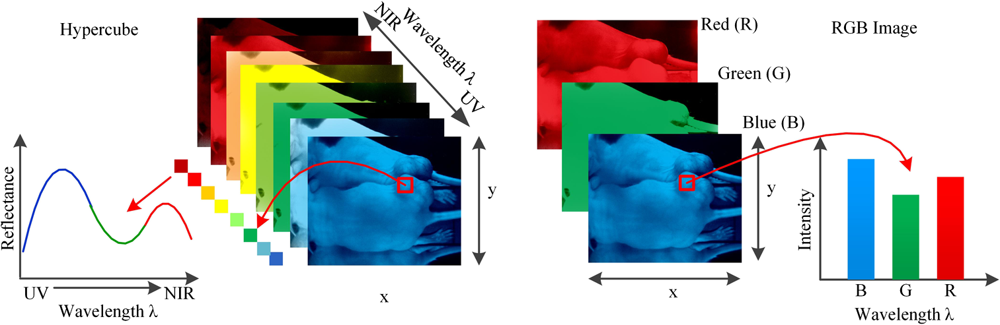
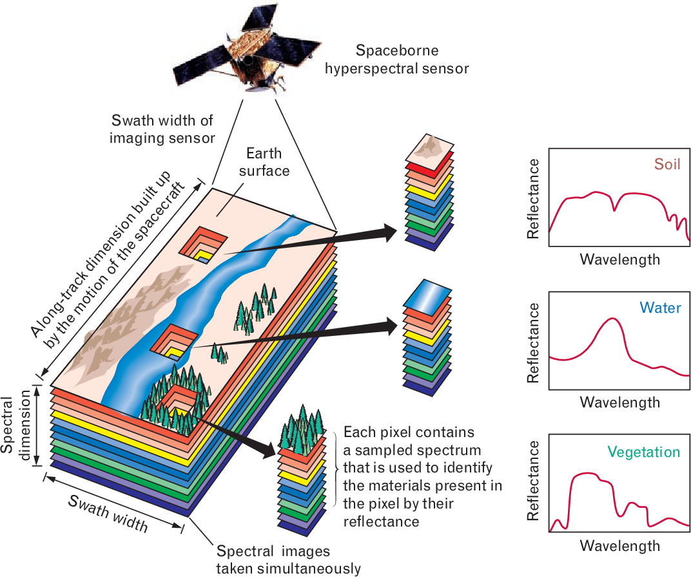

Hyperspectral Imaging: An Overview of its Applications and Benefits
Hyperspectral imaging is a powerful technology that has gained popularity in various industries due to its ability to provide detailed and accurate information about objects and materials. This technology has been applied in many fields, including agriculture, medicine, and military surveillance. In this article, we will explore what hyperspectral imaging is, how it works, and its applications in different industries.
What is Hyperspectral Imaging?
Hyperspectral imaging is a non-destructive technique that captures and analyzes the spectral information of an object or material. This technology uses a hyperspectral camera, which captures images at different wavelengths of the electromagnetic spectrum. These images are then processed to create a hyperspectral data cube, which contains detailed spectral information about the object or material being analyzed.
How does Hyperspectral Imaging Work?
Hyperspectral imaging works by capturing images of an object or material at different wavelengths of the electromagnetic spectrum, typically ranging from visible light to near-infrared or shortwave infrared. Each pixel in the image contains spectral information about the object or material at that particular wavelength. This information is then used to create a hyperspectral data cube, which contains a spectral signature for each pixel in the image.
Hyperspectral imaging is a powerful technique that can be used in various fields, including agriculture, medicine, and remote sensing. There are four different scanning techniques used for acquiring hyperspectral data, each with its own advantages and disadvantages.
The first technique is spatial scanning. In this technique, a strip of the scene is projected onto a slit and dispersed with a prism or a grating. The resulting 2D sensor output represents a full slit spectrum (x, λ). Line-scan cameras are commonly used in remote sensing, where platform movement or scanning is required to collect the spatial dimension. Point scanning is a special case of line scanning, where a point-like aperture is used instead of a slit, and the sensor is essentially one-dimensional instead of two-dimensional.
The second technique is spectral scanning. In this technique, the hyperspectral imaging device obtains a monochromatic, spatial map of the scene for each 2D sensor output. The scene is spectrally scanned by exchanging one optical band-pass filter after another while the platform remains stationary. This technique can suffer from spectral smearing if there is movement within the scene, but it has the advantage of being able to pick and choose spectral bands and having a direct representation of the two spatial dimensions of the scene.
The third technique is non-scanning. In this technique, a single 2D sensor output contains all spatial and spectral data, without any scanning. Snapshot hyperspectral imaging systems use this technique to yield the full datacube at once. The most prominent benefits of these systems are the snapshot advantage (higher light throughput) and shorter acquisition time. However, computational effort and manufacturing costs are high.
The fourth and final technique is spatiospectral scanning. This technique combines some of the advantages of both spatial and spectral scanning. Each 2D sensor output represents a wavelength-coded, spatial map of the scene. Advanced spatiospectral scanning systems can be obtained by placing a dispersive element before a spatial scanning system. Scanning can be achieved by moving the whole system relative to the scene, by moving the camera alone, or by moving the slit alone.
Overall, the choice of scanning technique depends on the specific application, as each technique has context-dependent advantages and disadvantages. Researchers and engineers must carefully consider their needs when selecting a scanning technique to obtain high-quality hyperspectral data.
Applications of Hyperspectral Imaging for Lighting
Hyperspectral imaging has a wide range of potential applications in the lighting industry, from product development to quality control. Here are some of the specific ways that hyperspectral imaging can be used for lighting:
1. Color Measurement
One of the primary applications of hyperspectral imaging in lighting is color measurement. By analyzing the spectral signature of light sources, hyperspectral imaging can provide accurate and detailed information about the color of the light produced. This can be useful for ensuring consistency in color and quality across different batches of light sources.
2. Quality Control
Hyperspectral imaging can also be used for quality control purposes in the lighting industry. By analyzing the spectral signature of light sources, companies can detect any defects or variations in their products. This can help to identify and correct any issues before the products are released to the market, reducing the risk of costly recalls or customer complaints.
3. Spectral Tuning
Hyperspectral imaging can be used for spectral tuning, which involves adjusting the spectral output of a light source to achieve a specific color or quality. By analyzing the spectral signature of light sources, companies can make adjustments to the design and materials used to improve performance and achieve a desired color or quality.
4. Lighting Design
Hyperspectral imaging can be used in lighting design to optimize the performance and quality of light sources. By analyzing the spectral signature of different light sources, designers can select the most appropriate light sources for a specific application or environment.
5. Horticulture Lighting
Hyperspectral imaging can also be used in horticulture lighting, which involves using artificial light sources to promote plant growth. By analyzing the spectral signature of different light sources, companies can optimize the light spectrum to promote plant growth and increase crop yields.
Overall, hyperspectral imaging has many potential applications in the lighting industry, from improving product quality to optimizing performance and achieving specific color or quality requirements. As this technology continues to evolve, we can expect to see more applications in this industry and beyond.
Other applications of Hyperspectral Imaging
Hyperspectral imaging has many applications in various industries, including:
Agriculture
Hyperspectral imaging can be used in agriculture to detect crop stress, disease, and nutrient deficiencies. By analyzing the spectral signature of plants, farmers can identify areas that need additional irrigation, fertilizer, or other treatments. This technology can also be used to monitor crop growth and predict yield.
Medical Imaging
Hyperspectral imaging has potential applications in medical imaging, including cancer detection and diagnosis. By analyzing the spectral signature of tissues, doctors can identify abnormal cells and tumors that may not be visible with traditional imaging techniques.
Remote Sensing
Hyperspectral imaging can be used in remote sensing to monitor and map natural resources, such as forests, water bodies, and minerals. By analyzing the spectral signature of these resources, researchers can identify changes in their composition and monitor their health over time.
Military Surveillance
Hyperspectral imaging can be used in military surveillance to detect and identify objects from a distance, including camouflage and hidden objects. By analyzing the spectral signature of objects, military personnel can distinguish between different materials and identify potential threats.
Benefits of Hyperspectral Imaging
Hyperspectral imaging has many benefits over traditional imaging techniques, including:
Improved Accuracy
Hyperspectral imaging provides detailed and accurate spectral information about an object or material, which can be used to identify subtle differences that may not be visible with traditional imaging techniques.
Non-Destructive
Hyperspectral imaging is a non-destructive technique that does not damage or alter the object or material being analyzed, making it ideal for use in many industries, including agriculture and medical imaging.
Cost-Effective
Hyperspectral imaging can be a cost-effective alternative to traditional imaging techniques, as it provides more information and can reduce the need for additional testing or analysis.
Conclusion
Hyperspectral imaging is a powerful technology that has many applications in various industries, including agriculture, medicine, and military surveillance. This technology provides detailed and accurate spectral information about objects and materials, which can be used to identify subtle differences and detect potential threats. With its many benefits, hyperspectral imaging is becoming an increasingly popular technology for use in a wide range of applications.
FAQs
- What is the difference between hyperspectral imaging and multispectral imaging?
- How is hyperspectral imaging used in agriculture?
- How is hyperspectral imaging used in medical imaging?
- How is hyperspectral imaging used in military surveillance?
- What are the benefits of hyperspectral imaging over traditional imaging techniques?
• Multispectral imaging captures images at a limited number of wavelengths, while hyperspectral imaging captures images at many more wavelengths, providing more detailed spectral information.
• Hyperspectral imaging can be used in agriculture to detect crop stress, disease, and nutrient deficiencies. By analyzing the spectral signature of plants, farmers can identify areas that need additional irrigation, fertilizer, or other treatments. This technology can also be used to monitor crop growth and predict yield.
• Hyperspectral imaging has potential applications in medical imaging, including cancer detection and diagnosis. By analyzing the spectral signature of tissues, doctors can identify abnormal cells and tumors that may not be visible with traditional imaging techniques.
• Hyperspectral imaging can be used in military surveillance to detect and identify objects from a distance, including camouflage and hidden objects. By analyzing the spectral signature of objects, military personnel can distinguish between different materials and identify potential threats.
• Hyperspectral imaging provides more detailed and accurate spectral information about an object or material, is non-destructive, and can be a cost-effective alternative to traditional imaging techniques.
This text was written with help of ChatGPT and the figures were generated using Microsoft Bing.
If you're interested in learning more about this research, feel free to reach out!
Rik Spieringhs